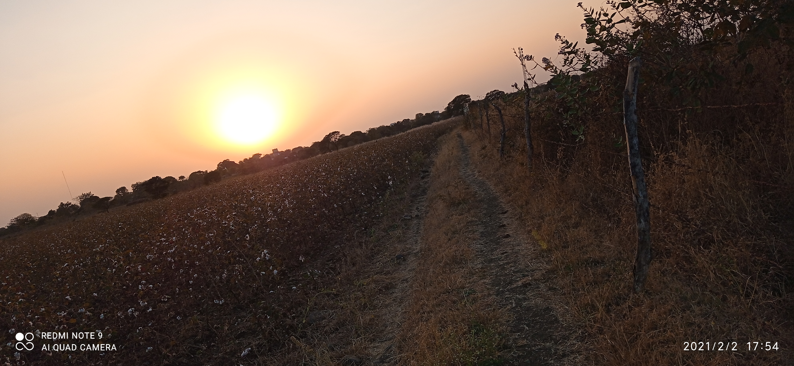
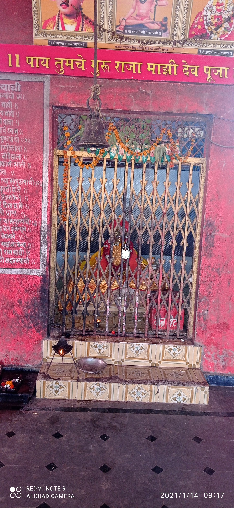
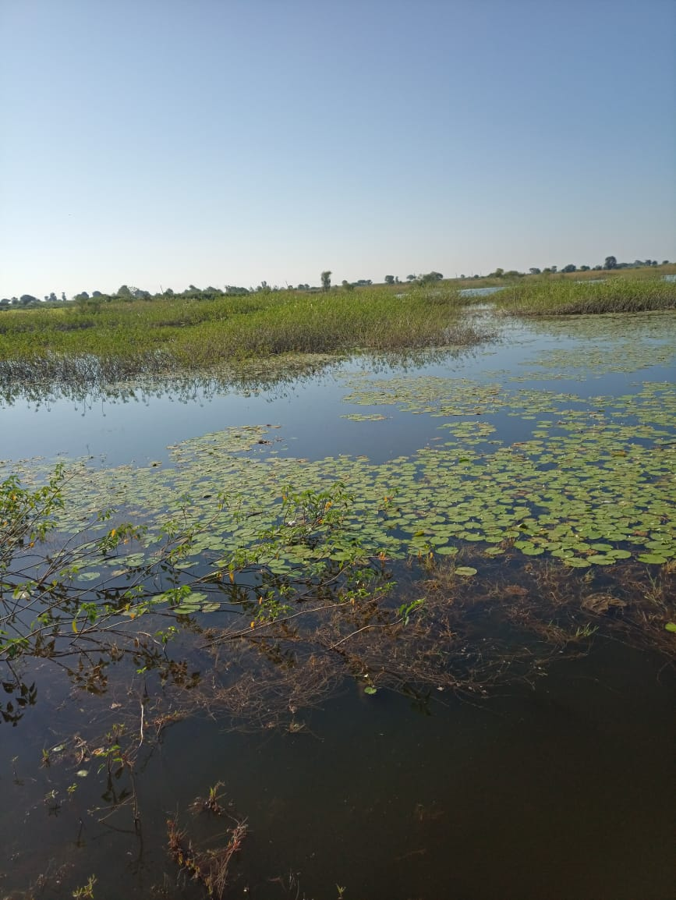
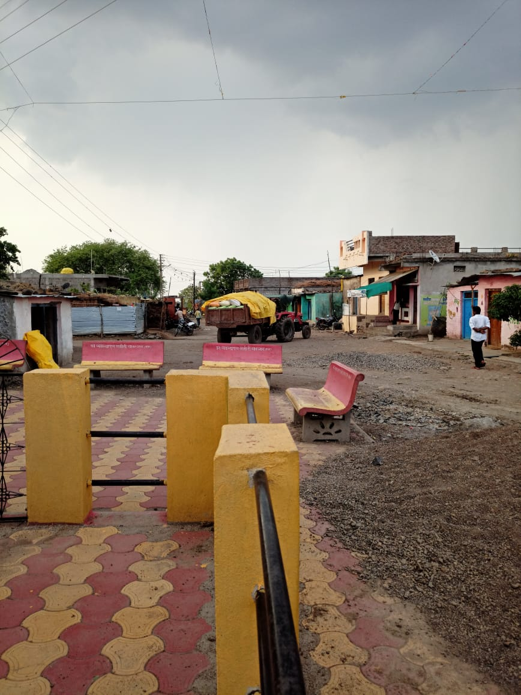

Sawargaon are situated in the maharashtra.in which sitted in the nanded. This village are sitted nearbly 60km long from nandedand also 40km long from hadgaon.
 Sawargaon are nearbly 400-500m long from east to west and 450-550m long from south to north.In the whole hadgaon taluka sawargaon is big village.With the comparison of sawargaon there is no any village.Outside to this village there are much more field are reserved for farmer.In which all farmer are doing their ownoccupations.Now,we move to big fact in any environmental factor which is temperature. Normally in the sawargaon 27°c-37°c temprature are in sawargaon.in another session like winter,summer and mansoon temperature is changing with the condition.
 Sawargaon are not very devoloped village as compare to other.in this village there is not any proper service for people.since the long year ago government are passed out many scheme but situation of Sawargaon can not be changed
Sawargaon are not very devoloped village as compare to other.in this village there is not any proper service for people.since the long year ago government are passed out many scheme but situation of Sawargaon can not be changed
we can not directly said the anyone can not trying to devolope this village but there is a big problem for whole village that is couraption. Now this is big problem for all india. but this is big for low level government service.when any educated person are trying to devolope the situation then other some bad minded people are directly stand to opposite to that personband after that sitauation will be remaining. another big problem for village which is Dirty politics!
Outside the village from some distance their are one village is sitted.which is called "Limbgaon".they have only 1000-2000 people are living but therefore they have their own government hospital. In the sawargaon there is no any government health servent.on this fact you can understand devolopment of this village.

This Is The Historic Place Of Marathawada, No Of Peoples Involved And Ware Freedom Fighter From Sawargaon Mal Hence The Sawargaon Had Been Totally Burned By Nizam. Even There Is Temple Of Bramhdeva. And Also There A Lotus Tank. It is Very Very Beautiful Place But Unknown To Many Peoples.
There is yatra after 5 days of GudhiPadwaof Bramhdeva. This village is upon the big mountain.the length of mountain and width is 10 to 10 km.The village is very big having more than 10000 acre land belong to this village.Potential is very high.But almost all unknown themselves land.
Natural tank is available by south side of village.The tank is always full of Lotus.Leaf of lotus are very famous and very big also theirs flowers are very big .The tank having more than 50 acre land.Tank have different types of birds are available in tank.they have very beautiful seens at the time of morning.
Blake soils is famous at this place.High rich quality of black soils are available in village.Never find as wheat in Maharashtra like this quality.
Around the village after gap of 5 km very high dencity of jungle is available. Hence Healthy atmosphiers is available there. If they taken any decisions they complate it.
Now they are going to change theirs village name as "Brameshwarinagari" .There is temple of brahma and lotus tank The tample is nothing but it is really powerfull to peoples.